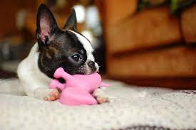

Meet the Pets
Bacon Q Dog

Bacon Q. Dog is a 9yr old labradoodle. He prefers to spend his days lounging among the three different beds/couches that his family has gifted him. He enjoys a walk or two around the neighborhood, as long as he can pretend that he doesn't see any of the other animals to avoid the embarrassment of not wanting to admit he has no wolf-like skills in chasing them.
At night just as the rest of the family is ready to relax, Bacon suddenly wants to release all of his energy. He will place his toys on a mini couch and frantically drag the couch around, giving his toys "a ride." There is also a lot of rolling. Lots and lots of rolling.
Photo Gallery


Likes
- Belly rubs
- Playing tug-of-war
- Sneaking onto the couch
Fitz

The Boston Terrier is a small, friendly, and lively breed of dog that originated in the United States.
Boston Terriers make wonderful companions for individuals and families who are looking for a small, affectionate, and well-behaved dog with a distinctive appearance.
Photo Gallery


Likes
- Attention
- Loves to play
- Likes to chill
Raja

The Siberian Husky is a medium-sized working sled dog breed. The breed belongs to the Spitz genetic family.
Siberian Huskies are highly active and energetic dogs.Siberian Huskies are typically social and enjoy the company of their human family members.
Photo Gallery


Likes
- Loves to dig
- Loves to run and play
- Likes adventures with thier humans
Yoda
French Bulldogs, often affectionately referred to as "Frenchies," are a charming and popular small breed of dog known for their distinctive appearance and playful personalities.
French Bulldogs thrive on human companionship and make excellent indoor pets. They love to be with their families and are known for their affectionate and loyal nature.
Photo Gallery
Likes
- Loves to snore
- Loves to be social
- Likes to sit on the bed
Blue
The Shiba bread dog is a small-medium-sized dog that is popular for its looks and personailty. Shiba dogs are spirited and independent in nature.
Shiba are known for their alertness and can make excellent watchdogs.They are a beloved breed for their charm, beauty, and intriguing mix of characteristics.
Photo Gallery
Likes
- Loves to escape
- Enjoys tricks
- Likes adventures with thier humans